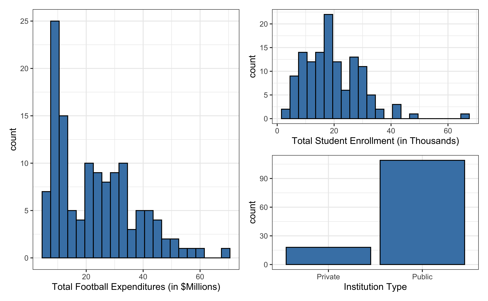
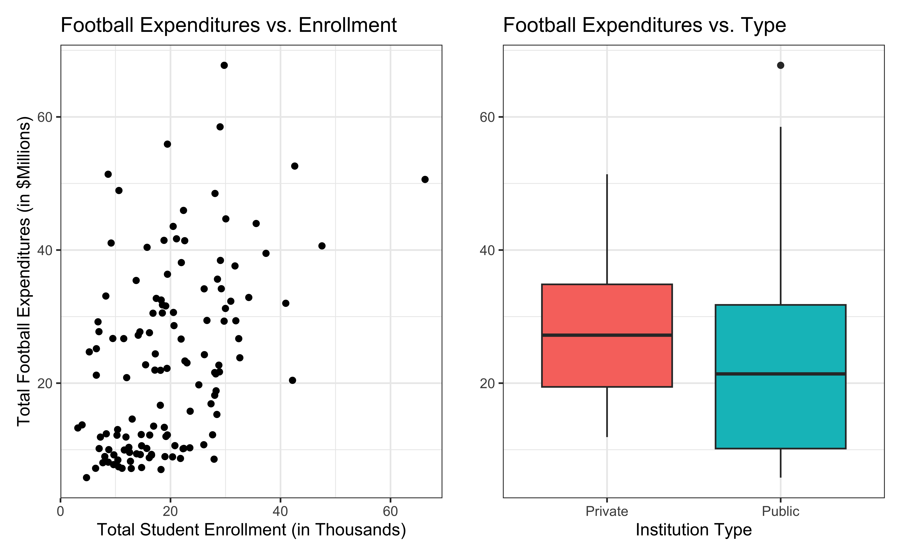
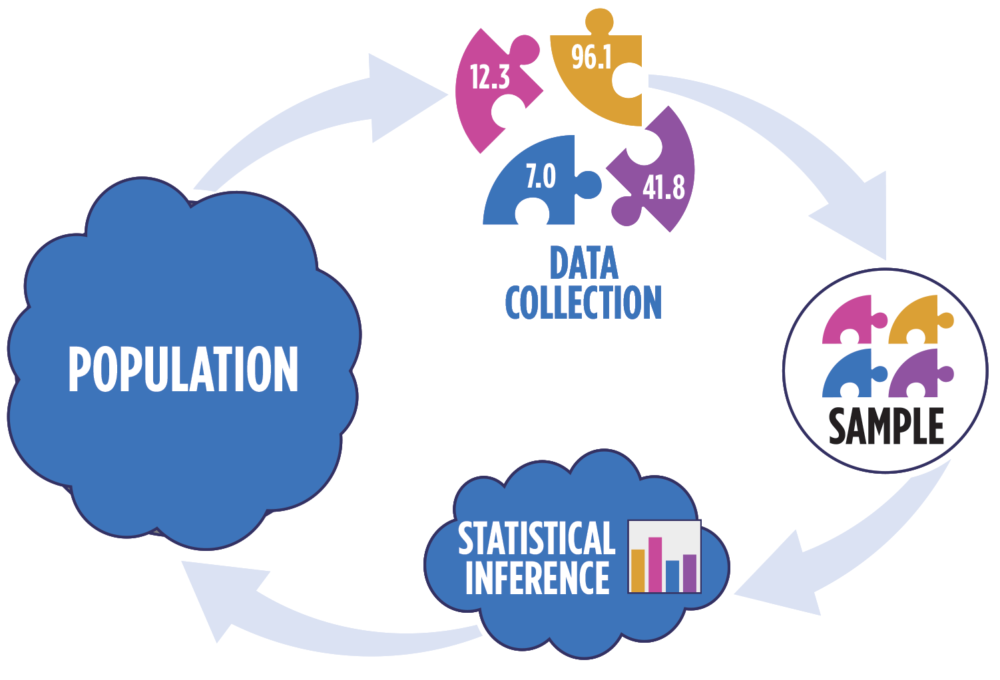

Inference for regression
February 03, 2026
Topics
Introduce statistical inference in the context of regression
Describe assumptions on the error terms \(\boldsymbol{\epsilon}\)
Use assumptions of \(\boldsymbol{\epsilon}\) to derive distribution of \(\mathbf{y}\)
Computing setup
Data: NCAA Football expenditures
Today’s data come from Equity in Athletics Data Analysis and includes information about sports expenditures and revenues for colleges and universities in the United States. This data set was featured in a March 2022 Tidy Tuesday.
We will focus on the 2019 - 2020 season expenditures on football for institutions in the NCAA - Division 1 FBS. The variables are :
total_exp_m: Total expenditures on football in the 2019 - 2020 academic year (in millions USD)enrollment_th: Total student enrollment in the 2019 - 2020 academic year (in thousands)type: institution type (Public or Private)
Univariate EDA

Bivariate EDA

Regression model
| term | estimate | std.error | statistic | p.value |
|---|---|---|---|---|
| (Intercept) | 19.332 | 2.984 | 6.478 | 0 |
| enrollment_th | 0.780 | 0.110 | 7.074 | 0 |
| typePublic | -13.226 | 3.153 | -4.195 | 0 |
For every additional 1,000 students, we expect an institution’s total expenditures on football to increase by $780,000, on average, holding institution type constant.
From sample to population
For every additional 1,000 students, we expect an institution’s total expenditures on football to increase by $780,000, on average, holding institution type constant.
- This is the exact relationship between expenditure and enrollment for the single sample of 127 higher education institutions in the 2019 - 2020 academic year.
- But what if we’re not interested quantifying the relationship between student enrollment, institution type, and football expenditures for this single sample?
- What if we want to say something about the relationship between these variables for all colleges and universities with football programs and across different years?
Inference for regression
Statistical inference
Statistical inference provides methods and tools so we can use the single observed sample to make valid statements (inferences) about the population it comes from
For our inferences to be valid, the sample should be representative (ideally random) of the population we’re interested in

Inference for a coefficient \(\beta_j\)
Hypothesis test for a coefficient \(\beta_j\)
Confidence interval for a coefficient \(\beta_j\)
Inference framework
Our objective is to infer properties about a population using data from observational (or experimental) data collection
Pre data collection: Before collecting the data, the data are unknown and random. \(\hat{\beta}\), which is a function of the data, is also unknown and random.
Post data collection: After collecting the data, \(\hat{\boldsymbol{\beta}}\) is fixed and known.
In all cases: The true population parameter, \(\boldsymbol{\beta}\) is fixed but unknown.
Question pre data collection: Is the probability distribution of \(\hat{\mathbf{\boldsymbol{\beta}}}\) a meaningful representation of the population? (We will slowly answer this question across the next few classes)
Distribution of \(\mathbf{y}\) in regression
Linear regression model
\[ \begin{aligned} \mathbf{y} &= \text{Model} + \text{Error} \\[5pt] &= f(\mathbf{X}) + \boldsymbol{\epsilon} \\[5pt] &= E(\mathbf{y}|\mathbf{X}) + \mathbf{\epsilon} \\[5pt] &= \mathbf{X}\boldsymbol{\beta} + \mathbf{\epsilon} \end{aligned} \]
We have discussed multiple ways to find the least squares estimates of \(\boldsymbol{\beta} = \begin{bmatrix}\beta_0 \\\beta_1\end{bmatrix}\)
- None of these approaches depend on the distribution of \(\boldsymbol{\epsilon}\)
Now we will use statistical inference to draw conclusions about \(\boldsymbol{\beta}\) that depend on particular assumptions about the distribution of \(\boldsymbol{\epsilon}\)
Linear regression model
\[\begin{aligned} \mathbf{Y} = \mathbf{X}\boldsymbol{\beta} + \boldsymbol{\epsilon}, \hspace{8mm} \boldsymbol{\epsilon} \sim N(\mathbf{0}, \sigma^2_{\epsilon}\mathbf{I}) \end{aligned} \]
such that the errors are independent and normally distributed.
- Independent: Knowing the error term for one observation doesn’t tell us about the error term for another observation
- Normally distributed: The distribution follows a particular mathematical model that is unimodal and symmetric
- \(E(\boldsymbol{\epsilon}) = \mathbf{0}\)
- \(Var(\boldsymbol{\epsilon}) = \sigma^2_{\epsilon}\mathbf{I}\)
Visualizing distribution of \(\mathbf{y}|\mathbf{X}\)
\[ \mathbf{y}|\mathbf{X} \sim N(\mathbf{X}\boldsymbol{\beta}, \sigma_\epsilon^2\mathbf{I}) \]

Image source: Introduction to the Practice of Statistics (5th ed)
Expected value
Let \(\mathbf{z} = \begin{bmatrix}z_1 \\ \vdots \\z_p\end{bmatrix}\) be a \(p \times 1\) vector of random variables.
Then \(E(\mathbf{z}) = E\begin{bmatrix}z_1 \\ \vdots \\ z_p\end{bmatrix} = \begin{bmatrix}E(z_1) \\ \vdots \\ E(z_p)\end{bmatrix}\)
Expected value
Let \(\mathbf{A}\) be an \(n \times p\) matrix of constants, \(\mathbf{C}\) a \(n \times 1\) vector of constants, and \(\mathbf{z}\) a \(p \times 1\) vector of random variables. Then
\[ E(\mathbf{Az}) = \mathbf{A}E(\mathbf{z}) \]
\[ E(\mathbf{Az} + \mathbf{C}) = E(\mathbf{Az}) + E(\mathbf{C}) = \mathbf{A}E(\mathbf{z}) + \mathbf{C} \]
Expected value of the response
Show \[ E(\mathbf{y}|\mathbf{X}) = \mathbf{X}\boldsymbol{\beta} \]
Variance
Let \(\mathbf{z} = \begin{bmatrix}z_1 \\ \vdots \\z_p\end{bmatrix}\) be a \(p \times 1\) vector of random variables.
Then \(Var(\mathbf{z}) = \begin{bmatrix}Var(z_1) & Cov(z_1, z_2) & \dots & Cov(z_1, z_p)\\ Cov(z_2, z_1) & Var(z_2) & \dots & Cov(z_2, z_p) \\ \vdots & \vdots & \dots & \cdot \\ Cov(z_p, z_1) & Cov(z_p, z_2) & \dots & Var(z_p)\end{bmatrix}\)
Variance
Let \(\mathbf{A}\) be an \(n \times p\) matrix of constants and \(\mathbf{z}\) a \(p \times 1\) vector of random variables. Then
\[ Var(\mathbf{z}) = E[(\mathbf{z} - E(\mathbf{z}))(\mathbf{z} - E(\mathbf{z}))^\mathsf{T}] \]
Variance of the response
Show
\[ Var(\mathbf{y}|\mathbf{X}) = \sigma^2_\epsilon\mathbf{I} \]
Linear transformation of normal random variable
Suppose \(\mathbf{w}\) and \(\mathbf{z}\) are (multivariate) normal random variables. Then, \(\mathbf{Aw} + \mathbf{Bz}\) is (multivariate) normal for \(\mathbf{A}\) and \(\mathbf{B}\) constant matrices.
Show that the distribution of \(\mathbf{y}|\mathbf{X}\) is normal.
Recap
Introduced statistical inference in the context of regression
Described assumptions on the error terms \(\boldsymbol{\epsilon}\)
Used assumptions of \(\boldsymbol{\epsilon}\) to derive distribution of \(\mathbf{y}\)
Next class
Distribution of \(\hat{\boldsymbol{\beta}}\)